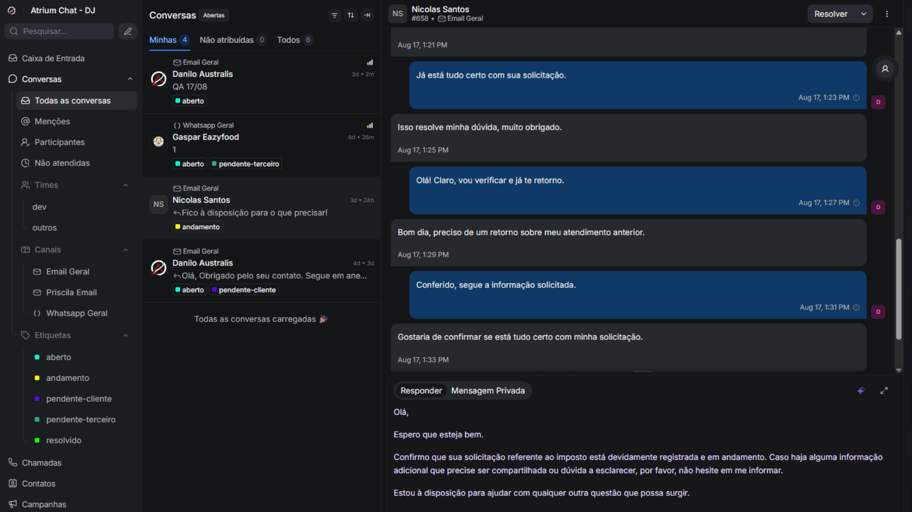
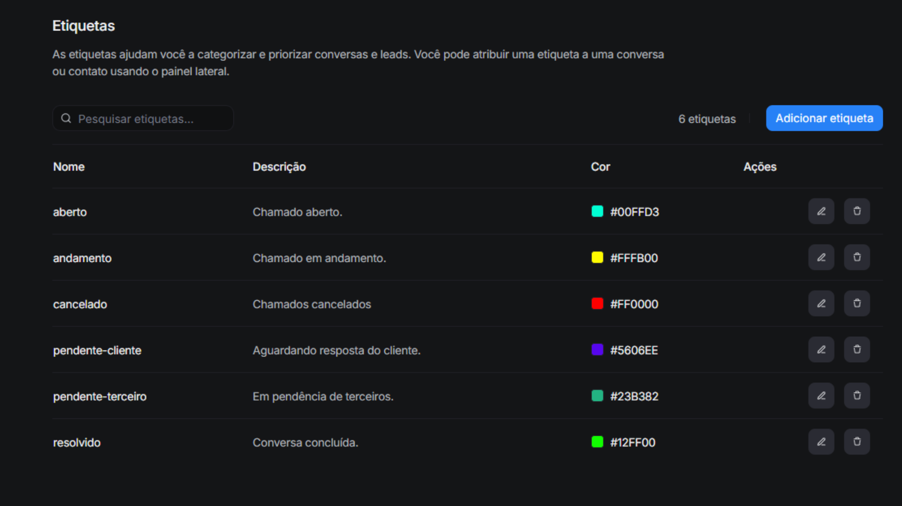
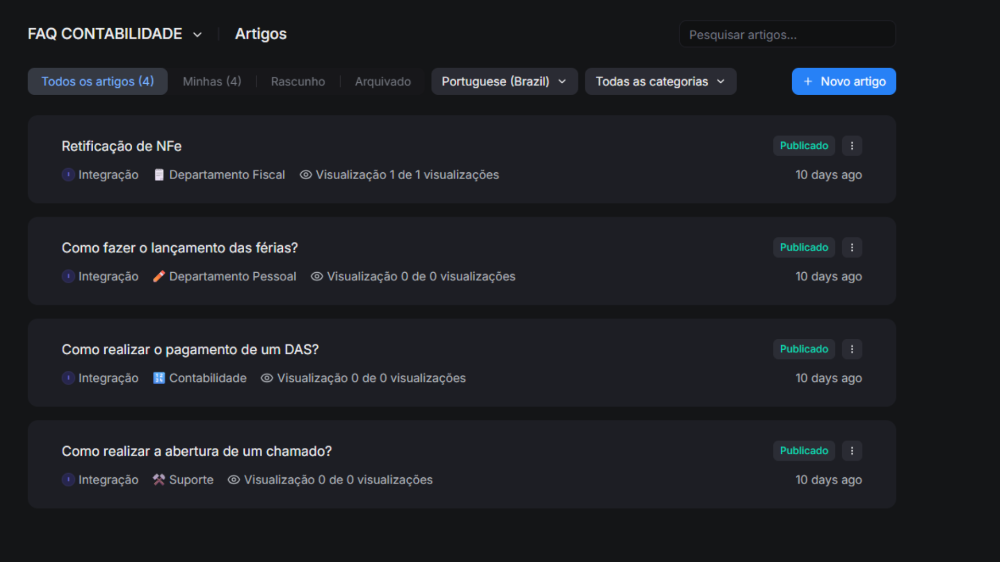
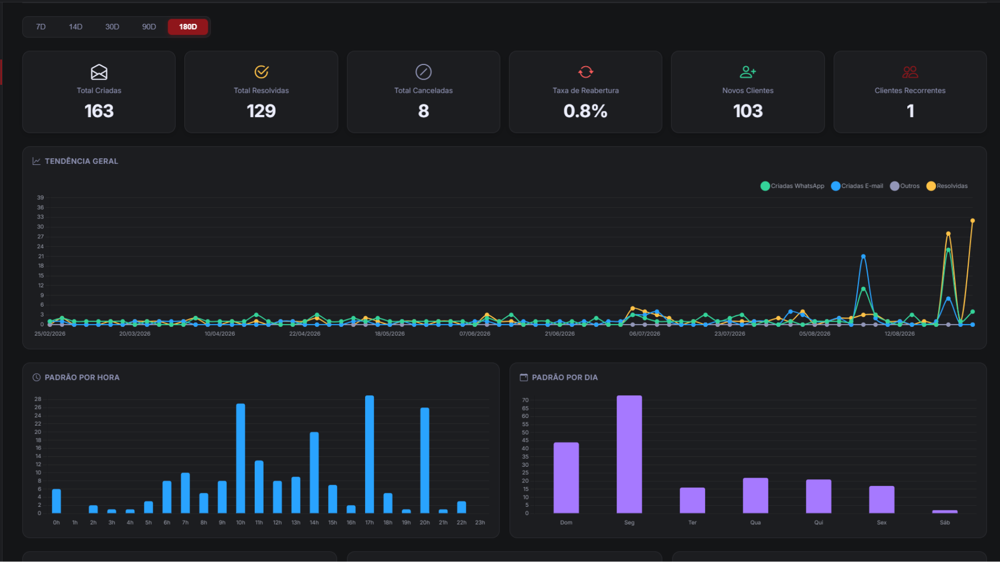
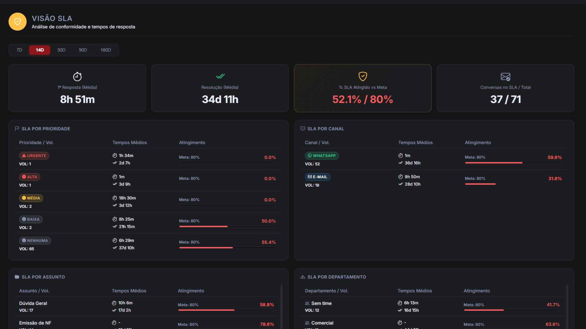
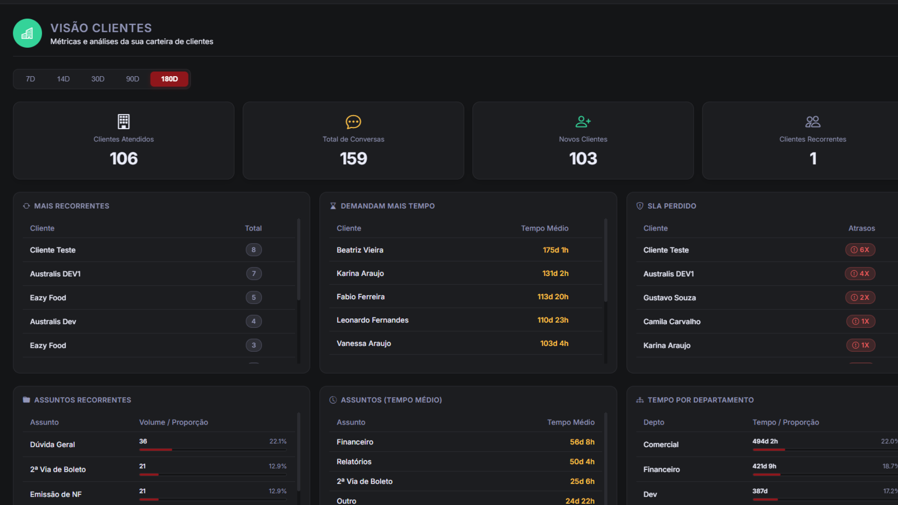
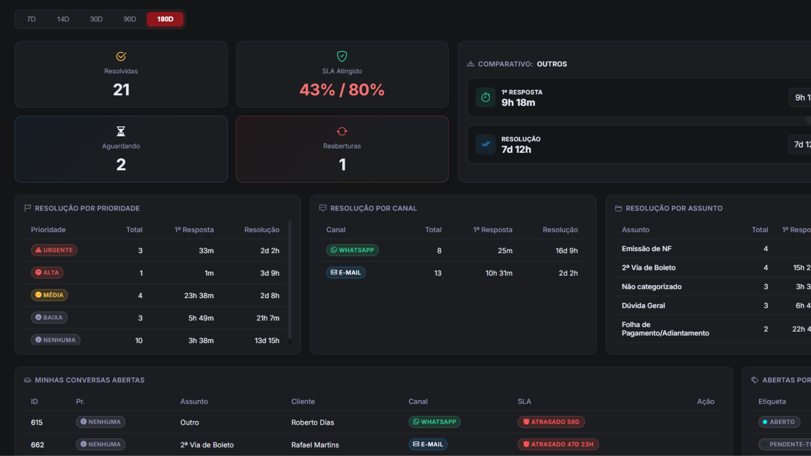

O controle absoluto da sua operação.
Centralize seu atendimento com IA nativa, monitore SLAs em tempo real e escale seus resultados com total transparência.

Atrium Chat
Caixa de entrada omnichannel self-hosted com automações e IA para revolucionar a produtividade do seu time.
Omnichannel & Copiloto IA
Caixa unificada com e-mail, WhatsApp e redes sociais. IA que resume históricos e ajusta o tom das respostas.
Gestão Visual Kanban
Etiquetas personalizadas para status como pendente, em andamento ou aguardando cliente.
Central de Ajuda e FAQ
Portal de autoatendimento para clientes e base de conhecimento para a equipe interna.



Respostas rápidas
Templates e atalhos para acelerar o primeiro contato com o cliente.
Atribuição automática
Distribui conversas por regras de fila, time ou carga de trabalho.
IA multilíngue
Resume e traduz conversas automaticamente, mantendo o contexto.
Atrium Monitor
Não espere o cliente reclamar. Monitore tendências, SLAs e gargalos da sua operação em tempo real.
Visão geral e tendências
Volume de aberturas de chamados e horários de pico da operação.
Controle de SLA implacável
Metas de 1ª resposta e resolução, por prioridade, canal e departamento.
Inteligência de clientes
Veja quais clientes têm o SLA estourado com mais frequência.
Performance de agentes
Compare times e agentes, fila pendente e tempo médio de resolução.




Plano simples. Transparência total.
Acesso completo ao pacote Atrium Desk (Chat + Monitor).
Atrium Desk Pro
O ecossistema completo para a sua equipe assumir o controle total.
- Até 10 atendentes inclusos
- 2 conexões de WhatsApp
- Atrium Chat (omnichannel + IA)
- Atrium Monitor (dashboards de SLA)
- Suporte técnico especializado
Implantação (Setup)
Configuração de servidores, integração de linhas e treinamento completo.
Sua operação cresceu?
Expanda sua equipe sem mudar de plano:
- R$ 30/mês por atendente extra
- R$ 50/mês por WhatsApp extra
Pronto para transformar seu atendimento?
Escolha o melhor horário na agenda para assistir a uma demonstração completa do Atrium Desk com nossos especialistas.